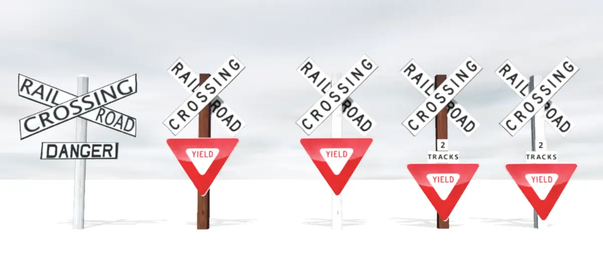
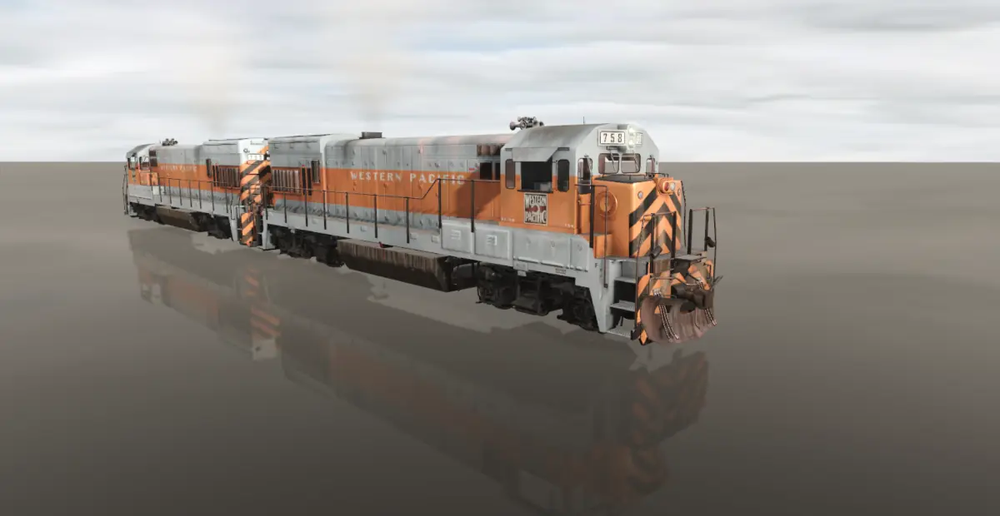

In 2016, I began to learn and use Blender, an open source 3d modeling program. At the time, and even until this day I geared my 3d modeling for use in video games, specifically creating mods and add-ons for a train simulator. As such, most of my models are railroad related. Here are several of the projects I have worked on. Here is a screenshot of one of my very first projects, several railroad crossing signs. To make these, I made the initial model or “mesh” as it is sometimes referred, then UV mapped it to texture plains and used image textures to add the different colors and lettering that can be seen in the photo. This small project helped me learn the basics of 3d modeling and eventual exportation into the game engine.
I worked on several other projects from there, eventually leading me to create 3d models of the Union Pacific 4-8-4 locomotives. This was one of my most lengthy projects. The model was created using blueprints based off the actual locomotive. This project also included something else of note, animations. The running gear on the sides of the locomotive was not easy to figure out how to do. I managed to complete the animation by using what is called an “armature” or “rig” in animation. Conceptually one may compare it to the skeleton in the human body. When an individual “bone” moves, it moves the mesh around it. Aside from animation, the locomotive also includes a custom script to allow the end user to change out parts of the locomotive, turn the headlight on and off, and even open the individual windows and doors of the locomotive. The script was written in a language specific to the game engine although the language is a derivative of C. Lastly, it must be noted that I had to learn more advanced “material” creation techniques to provide the desired amount of visual detail while also maintain performance. This was done by creating an albedo (base color) map, a normal map (a blue-ish looking image file which allows for details to be added such as rivets without adding “geometry” to the base model.) and a “specular” map. (Essentially a texture telling the rendering engine how “shiny” the individual parts of the model are. A good example of its necessicity can be seen on a dirty care. With the dust and dirt, the car stops reflecting the environment around it and becomes noticeably duller. This is an example of where a “specular” map would be useful.) To further allow for performance on lower-end machines, the model employs “Level of Detail” transitions. (Essentially, the model become progressively less detailed the farther away the camera is from the object.)
My most recent project has been a Western Pacific U30b. The project employs just about everything I had learned from previous projects, and then more. In the time between the steam locomotive project and this one, PBR or “physically based rendering” has become commonplace among 3d artists. The rendering engine now enables 3d artists not only to modify how “shiny” the object is, but also how reflective and “metallic” the model appears. An example of the difference between “metallicity” and “reflectiveness” can be seen in the comparison between two cubes. Suppose one is made of silver, and the other made of a hard and smooth plastic. The plastic cube still shines somewhat, btu the metal cube will be both shiny and will reflect the environment around it on its surface. Using All these techniques, I was able to produce a 3d model which looks very close to the real thing.
